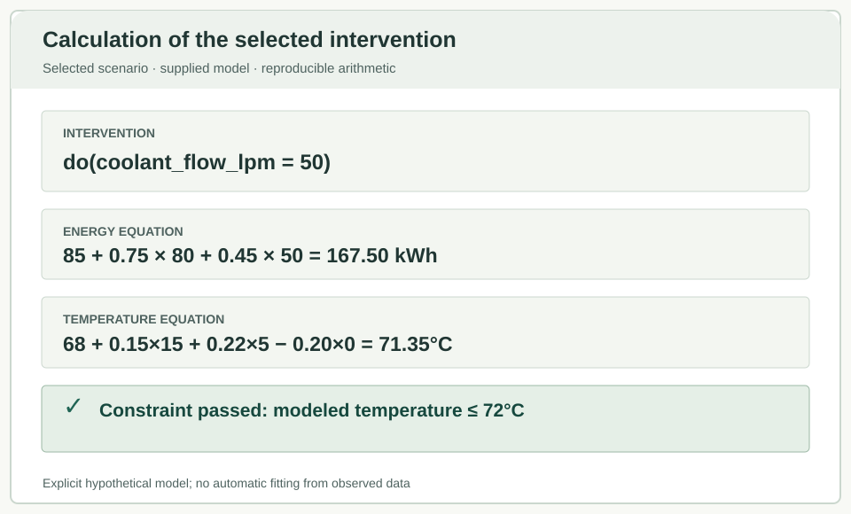

EXAMPLE USAGE / INDUSTRIAL COOLING
From data to
better decisions.
Explore a real mira research run on synthetic industrial data, then try your own what-if simulation.

INTERACTIVE / WHAT-IF SIMULATION
Change the inputs.
See what changes.
Explore hypothetical cooling decisions. Change a condition and compare the consequences.
Illustrative model using hypothetical coefficients, not live plant data.
01 / ANALYZE
Find meaningful
relationships.
Six industrial signals, 600 observations, and 15 statistically reported time-lagged relationships.

What influences what?
Production load, cooling flow and machine temperature show measurable temporal dependencies. These are statistical findings, not automatically proven intervention effects.
What comes next?
Specify the decision model and the assumptions to test possible actions.
02 / EVALUATE
Not every low-cost action
is feasible.
Three synthetic cooling-flow settings were evaluated against the same modeled temperature limit.

The lowest-energy feasible choice under the supplied model.
03 / VERIFY
See how the decision
was calculated.
Inputs, equations, interventions and constraint checks stay inspectable.

The what-if model uses supplied assumptions; it was not fitted from the discovery results.
Have a scenario in mind?
Share a research question or collaboration idea.